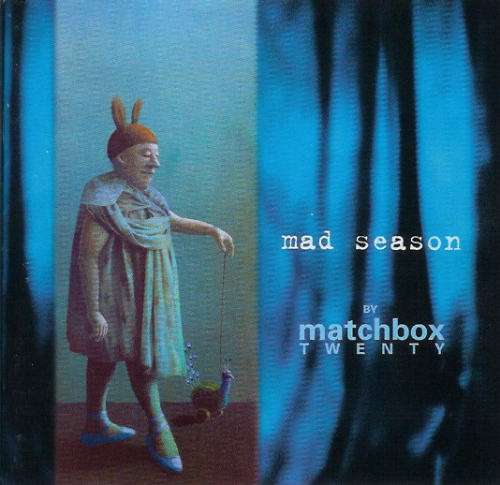

专辑名称：Mad Season
专辑歌手：Matchbox Twenty
发行时间：2000年
bent.mp3
If I fall along the way
pick me up and dust me off
if I get too tired to make it
be my breath so I can walk
If I need some other love thing
give me more than I can stand
when my smile gets old and faded
wait around I'll smile again
shouldn't be so complicated
just hold me and then
oh just hold me again
can you help me I'm bent
I'm so scared that I'll never
get put back together
keep breaking me in
and this is how we will end
with you and me bent
If I couldn't sleep could you sleep
could you paint me better off
could you sympathize with my needs
I know you think I need a lot
I started out clean but I'm jaded
just phoning it in
oh just breaking the skin
can you help me I'm bent
I'm so scared that I'll never
get put back together
keep breaking me in
and this is how we will end
with you and me bent
start bending me
It's never enough
I feel all your pieces
start bending me
Keep bending me until I'm completely broken in
shouldn't be so complicated
just touch me and then
oh just touch me again
can you help me I'm bent
I'm so scared that I'll never
get put back together
keep breaking me in
and this is how we will end
with you and me living without understanding
hell I'll go there again
can you help me I'm bent
I'm so scared that I'll never
get put back together
yeah your breaking me in
and this is how we will end
with you and me bent